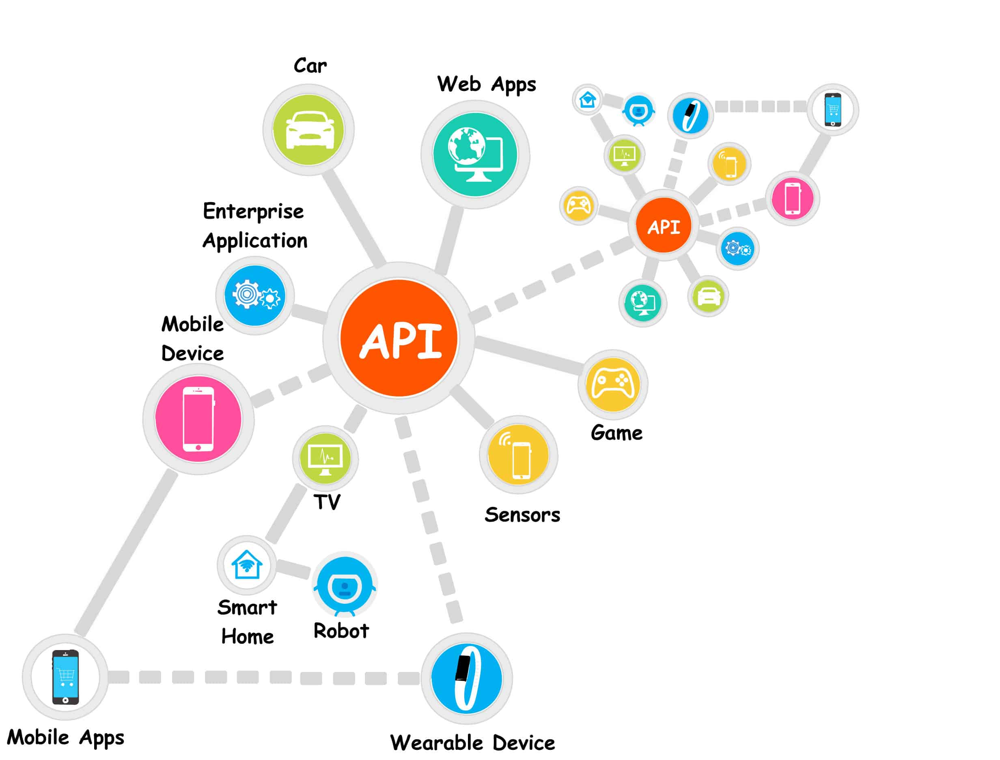
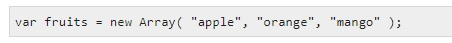
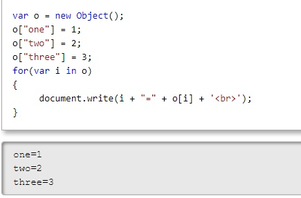
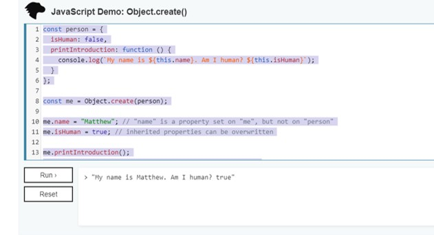

Local Storage
In many cases of APP development, there comes a need to collect and store information from a user and the call upon that information at a later time.
This can be accomplished in different ways. A few examples I hope to explain on this page are...
API
ARRAYS
ASSOCIATIVE ARRAYS
OBJECTS
What is an API?
An API is a set of functions and procedures allowing the creation of applications that access the features or data of an operating system, application, or other service.
How to you use an API?
An API specification can take many forms, but often includes specifications for routines, data structures, object classes, variables, or remote calls. POSIX, Windows API and ASPI are examples of different forms of APIs.
JavaScript is one of the more common ways collect data and then call on it later.
You can accomplish this using arrays or Objects
Arrays
The Array object lets you store multiple values in a single variable. It stores a fixed-size sequential collection of elements of the same type. An array is used to store a collection of data, but it is often more useful to think of an array as a collection of variables of the same type.
You call an array using something like this...
Associative Arrays
Associative arrays are dynamic objects that the user redefines as needed. When you assign values to keys in a variable of type Array, the array is transformed into an object, and it loses the attributes and methods of Array.
An Associatibe Array is also an object
You could create on like this...
Objects
Objects are the things you think about first in designing a program and they are also the units of code that are eventually derived from the process. In between, each object is made into a generic class of object and even more generic classes are defined so that objects can share models and reuse the class definitions in their code. Each object is an instance of a particular class or subclass with the class's own methods or procedures and data variables.
Objects are many things and can be used in many ways
A JSON object would look like this...
It this example, For my JSON project I use both objects and arrays to gather information and store it from a user.
package json;
import java.io.File;
import java.io.FileNotFoundException;
import java.io.PrintWriter;
import java.util.Scanner;
import org.json.simple.JSONArray;
import org.json.simple.JSONObject;
import org.json.simple.parser.JSONParser;
import org.json.simple.parser.ParseException;
/**
*
* @author adam
*/
public class JSON {
public static void main(String[] args) {
Scanner input = new Scanner(System.in);
System.out.print("Please Enter Your Name: ");
String name = input.nextLine();
// Here you create the JSON object with a name-name value
JSONObject root = new JSONObject();
root.put("name", name);
// Here you declare array and then add to loop
JSONArray courses = new JSONArray();
while (true) {
// Ask user for courses they still need to take at BYU-I
System.out.print("Please Enter the Course/Courses you still need to take at BYU-I:\nIf no other course/s, leave it blank, and hit enter. ");
String course = input.nextLine();
// Break loop if user leaves course field blank and hits enter
if (course.length() == 0) {
break;
}
// Ask user for grade they hope to achieve
System.out.print("Enter Percent Grade You Hope to Achieve (example 83): ");
int grade = input.nextInt();
if (input.hasNextLine()) {
input.nextLine();
}
// Here you create and store JSON object
JSONObject courseObject = new JSONObject();
courseObject.put("grade", grade);
courseObject.put("name", course);
// Add course to array
courses.add(courseObject);
}
// Add the array to root object
root.put("courses", courses);
System.out.println(root.toJSONString());
// Trying to create a text file
File file = new File("StudentInfo.txt");
try (PrintWriter writer = new PrintWriter(file)){
writer.print(root.toJSONString());
} catch (FileNotFoundException ex) {
System.out.println(ex.toString());
}
System.out.println("The File was created successfully.\n\nPress enter to finish.");
input.nextLine();
try {
input = new Scanner(file);
StringBuilder jsonIn = new StringBuilder();
while (input.hasNextLine()) {
jsonIn.append(input.nextLine());
}
System.out.println(jsonIn.toString());
// Parse string
JSONParser parser = new JSONParser();
JSONObject objRoot = (JSONObject) parser.parse(jsonIn.toString());
System.out.printf("Students name is %s\n", objRoot.get("name").toString());
// Add parsed contents back into array
JSONArray coursesIn = (JSONArray) objRoot.get("courses");
// Loop back through the array to display contents
for (int i = 0; i < coursesIn.size(); i++) {
JSONObject courseIn = (JSONObject) coursesIn.get(i);
long gradeIn = (long) courseIn.get("grade");
String nameIn = (String) courseIn.get("name");
System.out.printf("Course %s; Percent grade %d\n", nameIn, gradeIn);
}
//Had to create a catch for the file not found exception.
} catch (FileNotFoundException | ParseException ex) {
System.out.println(ex.toString());
}
}
}